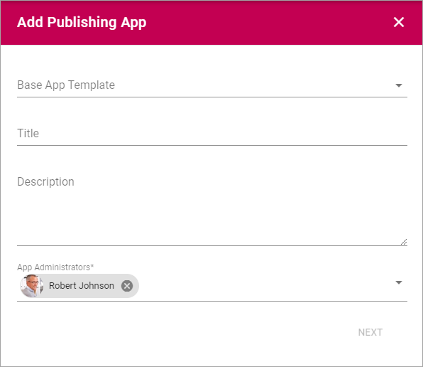

Publishing Apps¶
Note! This documentation is just started. More will be added soon.
Within a Business Profile several Publishing Apps can be active for different settings. To be able to create a Publishing App, at least one Provisioning Template for Publishin´g Apps must be available.
Create a new Publishing App¶
Do the following:
- Click the plus.
Use the following settings:
- Base App Template: Select Provisioning Template here.
- Title: Add a Title for the Publishing App.
- Description: Add a Description if needed.
- App Administrators: The active Administrator (you) is automatically added as App Administrator. Add or delete administrators as needed.
- Click “Next” and use the following settings:
- Sharepoint Alias: The last part of the Url to the Publishing App is shown here. It can be edited if needed.
- Omnia Alias: (A description will be added soon)
- Document site: The Url to the Document Site for the Publishing App is shown here. It can be edited if needed.
- Document Library Name: As default, the Document Library will be named Documents. If you want another name, type it here.
- Allow User Upload Document: The Administrator of the Publishing App willl always be able to upload documents to the Document Library. If end users should be able to do that as well, select this option.
- Click “ADD” to create the Publishing App.